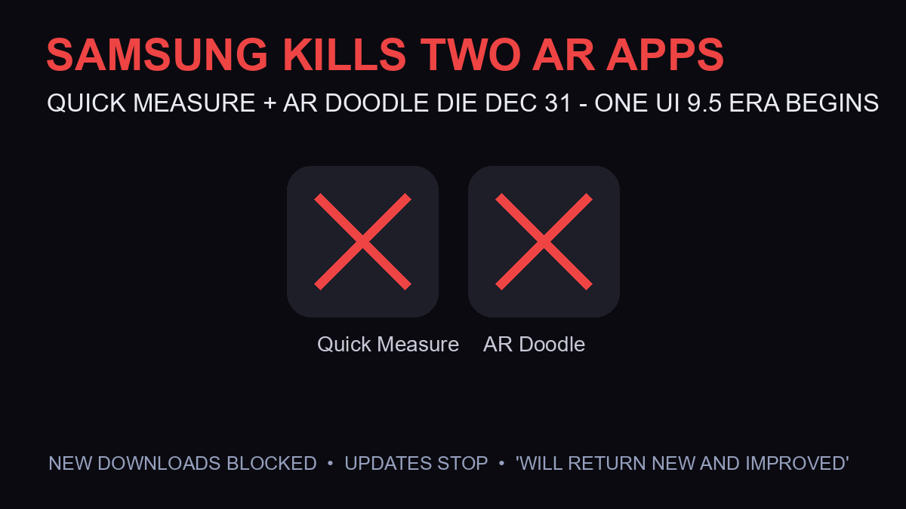

Samsung Is Killing Quick Measure and AR Doodle on December 31 — Why, and What Replaces Them

Two of Samsung’s oldest AR experiments are being retired. Samsung has officially confirmed that Quick Measure and AR Doodle will reach end-of-service on December 31, 2026 — after that date, new downloads are blocked, update support stops, and existing users may lose features (9to5Google first spotted the change, SamMobile and AndroidCentral confirmed). The confirmation comes straight from the Galaxy Store’s own app listing: “service for the Quick measure app is scheduled to be terminated on 31 December 2026.”
What Exactly Happens on December 31
- New downloads blocked: both apps disappear from download listings — if you don’t have them installed by then, that’s it (SamMobile)
- Update support stops: no more patches, bug fixes, or compatibility updates
- Existing users “may lose access to some features”: Samsung’s carefully worded phrasing suggests partial functionality loss, not necessarily a full kill switch (Gadinsider syndication)
- The cryptic promise: AndroidCentral notes Samsung “vows to return new and improved” — suggesting a reworked version tied to a future One UI release
The One UI 9.5 Connection Everyone Missed
SammyFans’ framing is the sharpest read: these apps are being retired “ahead of One UI 9.5.” That timing isn’t coincidence. Samsung has been consolidating its scattered AR utilities into its camera stack and Galaxy AI features over the past two years — Quick Measure’s depth-sensing and AR Doodle’s drawing features have native equivalents now. The retirement looks less like abandonment and more like feature migration into the main camera app, with the “new and improved” tease pointing at One UI 9.5’s AR capabilities.
Who Actually Uses These Apps — And Why It Still Matters
Honestly: very few people. Quick Measure (AR-based distance/height measuring) and AR Doodle (drawing in 3D space) were showcase features from the 2019-2020 5G marketing era — the “look what 5G phones can do” demos. Most Galaxy owners never opened either. But the searches are real: users discovering the shutdown notice in their app drawers are wondering what happened — and the answer is Samsung clearing the AR deck before its next UI generation.
Replacement Options for Affected Users
- For measuring: Google’s Measure-style features, third-party Play Store AR rulers, or the camera’s native object-distance display on newer Galaxy models
- For AR Doodle: Samsung Notes’ PDF annotation, PENUP for drawing, or third-party AR sketch apps
- For everything: wait for One UI 9.5 — Samsung’s “new and improved” promise suggests the functionality returns consolidated
Frequently Asked Questions
When is Samsung discontinuing Quick Measure?
December 31, 2026. After that date, new downloads are blocked and the app stops receiving update support. Samsung’s Galaxy Store listing confirms the termination date directly.
Is AR Doodle also being discontinued?
Yes — both AR Doodle and Quick Measure reach end-of-service on December 31, 2026, per Samsung’s updated app information (9to5Google, SamMobile, and the Samsung Community forum all confirm).
Will Samsung bring back Quick Measure and AR Doodle?
Samsung has told AndroidCentral it “vows to return new and improved” — with SammyFans noting the retirement comes ahead of One UI 9.5. The likely plan: consolidated AR features built into the camera/AI stack rather than standalone apps.
What can I use instead of Quick Measure on my Galaxy phone?
Third-party AR measuring apps from the Play Store work fine, and newer Galaxy models show object distance natively in the camera app. For AR Doodle users, Samsung Notes annotation and third-party AR sketch apps are the main alternatives.
Sources
- 9to5Google — shutdown first spotted (Sept 7)
- Samsung Galaxy Store — official termination notice (Dec 31, 2026)
- SamMobile — download removal + update stop details
- AndroidCentral — “will return new and improved” promise
- SammyFans — One UI 9.5 timing connection